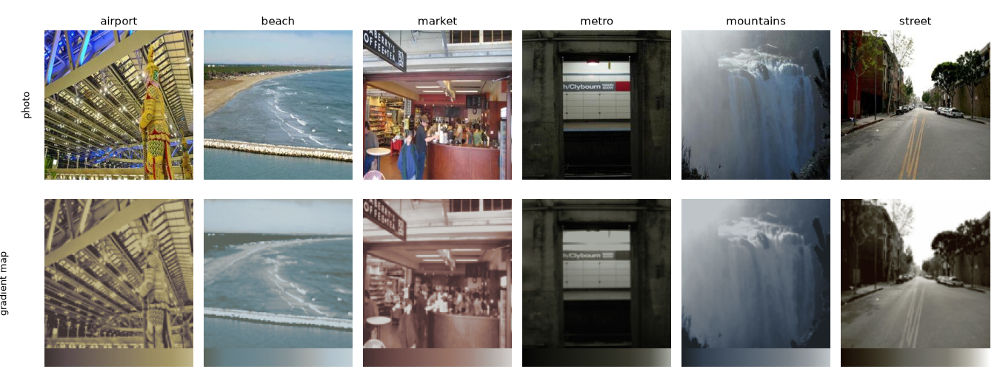
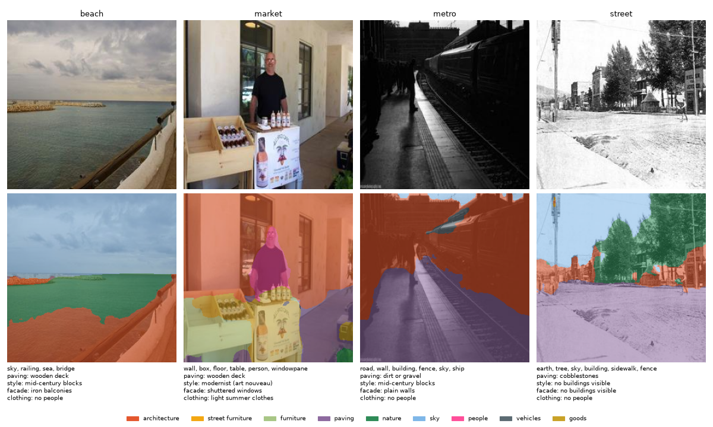

Data · Places365 val: 36,500 photos, 365 scene types (autoencoder training) · 6 places (market, street, beach, mountains, metro, airport): 900 photos → 731 scenes after removing close-ups · Wikimedia Commons Barcelona: 29,785 geotagged photos found Model · conv autoencoder, 64×64 RGB, 3 setups (dense-64, conv-64, conv-256), same split and seed · ready-made CLIP, Faster R-CNN, SegFormer for labels
photo → clean → label → colours → details → autoencoder → scene card → app → music
place, time palette doors, windows, latent code, (JSON) Tone.js
season gradient paving, clothing similar scenes

Every photo → its gradient map: 8 colours from shadows to highlights (24 numbers for the music)

Details: architecture, street furniture, furniture, paving, nature, people + paving material, style, clothing
900 photos fully labelled: place, time of day, season, 3–6 colour palette, 8-stop gradient map, 150-class details · autoencoder: training (results pending)
A user takes a photo of a place in Barcelona (or any city). The app reads the place, the light and the colours, finds the most similar scenes with our autoencoder, and turns them into a ~10 second piece: the place picks the genre, the colours pick key, chords and melody.